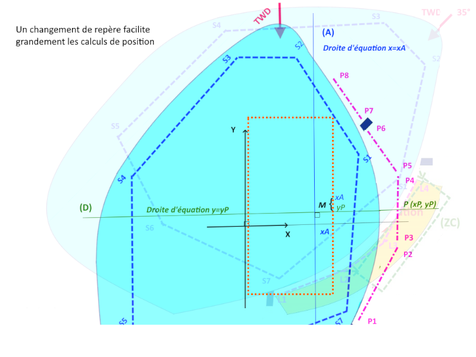

RoBoNav's Documentation
robonav@free.fr

Retour
(CC BY-SA 4.0) JF
Algorithme de positionnement automatique de bouées mobiles pour des régates de voiliers radio commandés
Le positionnement et l'ancrage virtuel par GPS de bouées de régates de voiliers radiocommandés est un projet initié en février 2023
entre l'ARBL (Association Radiomodéliste des Bords de Loire) et l'ICAM de Nantes.
Il consiste à proposer une ensemble logiciel et matériel permettant de positionner par radiocommande puis de maintenir en place une constellation
de bouées asservies chacune à une position GPS.
La page web placerbouees.html implante un algorithme de positionnement élémentaire.
Principe

Déterminer un rectangle englobant orienté dans l'axe du vent, au plus près de la ligne de déplacement des concurrents ;
puis y placer 6 bouées selon un parcours standard constitué de :
- Deux bouées au vent (dog leg bâbord)
- Une porte sous le vent
- Un ligne de départ située à 1/3 de la distance entre la porte sous le vent et le dog leg au vent.
Données en entrée
- Configuration du plan d'eau ciblé : coordonnées géographiques, zone de navigation, circuit de déplacement des concurrents, liste de bouées fixes.
- Direction TWD d'où vient le vent, en degré, selon la rose des vents.
Les directions sont explorées de 0° à 360° avec un pas de 15°;
["N: 0°", "15°", "NNE: 30°", "NE: 45°", "ENE: 60°", "E: 90°", " 105°", "ESE: 120°", "SE: 135°", "SSE : 150°", " 165°", "S: 180°", " 195°", " 210°", "SW: 225°", "235: WSW","W: 270°"," 285°","WNW: 300°","WNW : 315°", "NW: 330°", "NNW: 345°"];
Etapes de l'algorithme
- Calculer l'orientation du vent en radian ;
- Déterminer la boîte englobante de la zone de navigation (polygone à N sommets) en coordonnées géographiques (longitude, Latitude);
- Faire un changement de repère pour se ramener à des coordonnées cartésiennes d'un repère direct ;
- Faire une transformation géométrique (rotation) afin de ramener "la direction du vent" selon l'axe des Y, pour faciliter les calculs d'intersection ;
- Déterminer le sommet le plus proche de la ligne de déambulation des concurrents selon l'axe perpendiculaire au vent ;
- En fonction de la situation du plan d'eau par rapport à la ligne de déambulation des concurrents :
- Calculer un seuil minimal (seuilH) d'espacement des portes et un seuil minimal (seuilV) d'espacement entre le dog leg
au vent et la porte sous le vent, en fonction de la place disponible sur le plan d'eau ;
Un espacement de 7 à 15 mètres est acceptable pour l'écart entre les bouée de départ :
Un espacement de 50 à 100 mètres est acceptable entre la porte au vent et la porte sous le vent ;
- Tant que le plan d'eau n'est pas entièrement balayé
- Balayer le plan d'eau par des droites d'abscisse x=constante de xmin à xmax ou de xmax à xmin selon un pas de PasXHorizontal (1 mètre)
- Déterminer, pour chaque valeur de x, les points d'intersection (minY1 et maxY1) avec le polygone de navigation ;
- Si la distance verticale distance(minY1,maxY1) est supérieure ou égale au seuil vertical seuilV :
- Fixer la position X1=x et initialiser la recherche d'une seconde droite vertical X2=X1+PasXHorizontal
- Tant que la distance(X1,X2)<seuilH et que distance(minY2,maxY2)<seuilV reprendre le balayage
pour trouver une deuxième droite "verticale" d'intersection (minY2,maxY2) avec le polygone de navigation ;
- Quand ces conditions sont remplies vérifier que l'espacement vertical est suffisant,
à savoir distance(max(minY1,minY2), min(maxY1,maxY2)) >= seuilV ;
- Si c'est le cas la bande rectangulaire de diagonale Sommet1(X1, max(minY1,minY2)) , Sommet2(X2, min(maxY1,maxY2)
peut contenir un très grand nombre de rectangles de hauteur seuilV.
- Pour en limiter le nombre on s'en tient à un dizaine au plus par bande verticale ;
On calcule un pas vertical PasDeYVertical = max(2, round((distance(max(minY1,minY2), min(maxY1,maxY2)) - seuilV) / 10))
- Pour chaque rectangle de la bande verticale distants de PasDeYVertical on stocke
les coordonnées (xOuest, xEst, ySud, yNord) pour un traitement ultérieur.
- Décaler X1 de la distance (X1,X1+PasXHorizontal) et reprendre les calculs.
- Trier les rectangles candidats par rapport à leur distance à la zone de déambulation des concurrents (ZC).
- Si un rectangle est trouvé y placer les bouées.
Données en sortie
- Un fichier .../data/robonav_<NomDuPlanDEau>_<TWD>_aaaammjj.json
contenant la liste des bouées et leur positions GPS
Implantation
En pratique le placement n'est pas optimal pour les directions du vent perpendiculaires à la zone d'évolution des concurrents,
car la distance aux bouées de départ et aux bouées au vent peut être rédhibitoire.
C'est pourquoi on propose de retoucher le parcours automatique avec l'outil d'édition .../editer.html
Droits d'utilisation et de modification (License)
Tout ce projet est en Open source.
(CC BY-SA 4.0) JF